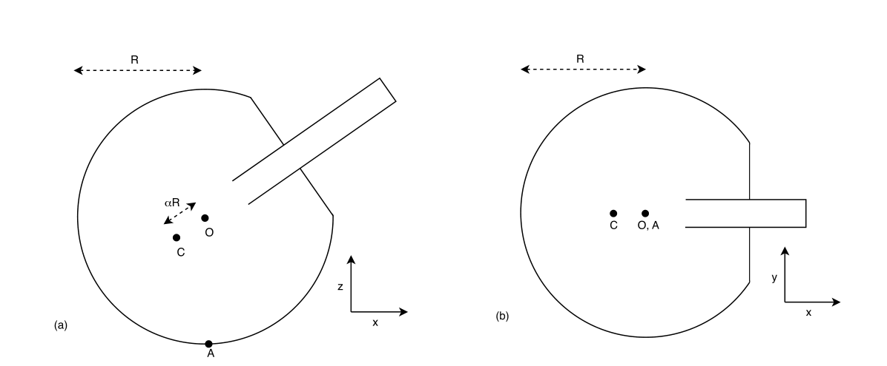
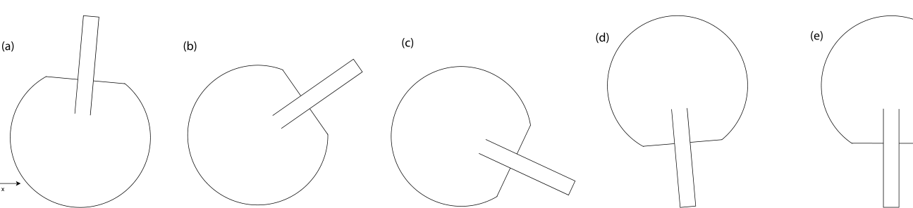
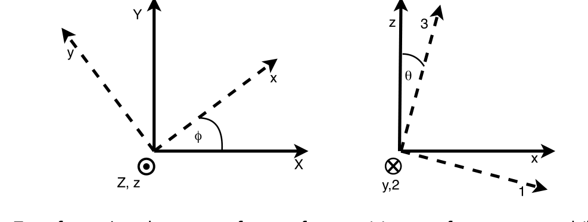

Tippe top
Part A (10.0 points)
A Tippe top is a special kind of top that can spontaneously invert once it has been set spinning. One can model a Tippe top as a sphere of radius that is truncated, with a stem added. It has rotational symmetry about an axis through the stem, which is at angle from the vertical. As shown in Figure 1(a), its centre of mass is offset from its geometric centre by along its symmetry axis. The Tippe top makes contact with the surface it rests on at point ; we assume this surface is planar, and refer to it as the floor. Given certain geometrical constraints and if spun fast enough initially, the Tippe top will tip so that the stem points increasingly downwards, until it starts to spin on in its stem, and eventually comes to a stop.

Figure 1. Views of the Tippe top (a) from the side and (b) from above.Let be the rotating reference frame defined such that is stationary and upwards, and the top’s symmetry axis is within the -plane. Two views of the Tippe top are shown in Figure 1: from the side, and from above. As shown in Figure 1(b), the top’s symmetry axis is aligned with the -axis when viewed from above.
Figure 2 shows the top’s motion at several phases after it is started spinning:
- A. phase I: immediately after it is initially set spinning, with
- B. phase II: soon after, having tipped to angle
- C. phase III: when the stem first touches the floor, with
- D. phase IV: after inversion, when the top is spinning on its stem, with
- E. phase V: in its final state, at rest on its stem .

Figure 2. Phases I to V of the Tippe top’s motion, shown in the -plane.Let be the inertial frame, where the surface the top is on is wholly in the -plane. The frame is defined as above, and reached from via rotation around the axis by . The transformation from the frame to frame is shown in Figure 3(a). In particular, .

Figure 3. Transformations between reference frames: (a) to from , and (b) to 123 from .Any rotational motion in 3-dimensional space can be described by the three Euler angles . The transformations between the inertial frame , the intermediate frame , and the top’s frame can be understood in terms of these Euler angles.
In our description of the Tippe top’s motion, the angles and are the standard zenith and azimuthal angles respectively, in spherical polar coordinates. In the frame they are defined as follows: is the angle of the top’s symmetry axis from the vertical -axis, representing how far from vertical its stem is, while represents the top’s angular position about the -axis, and is defined as the angle between the -plane and the plane through points (i.e. the vertical projection of the top’s symmetry axis).
The third Euler angle describes the rotation of the top about its own symmetry axis, i.e. its ‘spin’, which has angular velocity .
The reference frame of the spinning top is defined as a new rotating frame , which is reached by rotating by around : ‘tilting’ the -axis down by to meet the top’s symmetry axis . The transformation from the frame to the frame is shown in Figure 3(b). In particular, .
NOTE: For a reference frame rotating in inertial frame with angular velocity , the time derivatives of a vector within both frames and are related via: \left(\frac{\partial \mathbf{A}}{\partial t}\right)_K = \left(\frac{\partial \mathbf{A}}{\partial t}\right)_{\tilde{K}} + \omega \times \mathbf{A} \tag{1}
The motion that a Tippe top undergoes is complex, involving the time evolution of the three Euler angles, as well the translational velocities (or positions) and the motion of the top’s symmetry axis. All of these parameters are coupled. To solve for the motion of a Tippe top, one would use standard tools including Newton’s laws to prepare the system of equations, then program a computer to solve them numerically via simulation.
In this question, you will perform the first part of this process, investigating the physics of the Tippe top to set up the system of equations.
Friction between the Tippe top and the surface it is moving on drives the motion of the Tippe top. Assume that the top remains in contact with the floor at point , until such time as the stem contacts the floor. It is in motion at point with velocity relative to the floor. The frictional coefficient between the top and floor is kinetic, with , where is the frictional force, and is the magnitude of the normal force. Assume that the top is initially set spinning only, i.e. there is no translational impulse given to the top.
Let the mass of the Tippe top be . Its moments of inertia are: about the axis of symmetry, and about the mutually perpendicular principal axes. Let be the position vector of the centre of mass, and be the vector from the centre of mass to the point of contact.
Unless otherwise specified, give your answers in the reference frame for full marks. All torques and angular momentum are considered about the centre of mass , unless otherwise specified. You may give your answers in terms of . Except for part A.8, you need only consider the top where , and the stem is not in contact with the floor.
A.1 Find the total external force on the Tippe top. Draw a free body diagram of the top, projected onto each of the - and -planes. Indicate the direction of in the space provided, on your diagram in the -plane. (1pt)
A.2 Find the total external torque on the Tippe top about the centre of mass. (0.8pt)
A.3 Given the contact condition, i.e. , show that the velocity at has no component in the -direction, i.e. we can write . (0.4pt)
A.4 Find the total angular velocity of the rotating top about its centre of mass in terms of the time derivatives of the Euler angles: Use Figure 3 if this is helpful. Give your answer in the frame, and in the frame. (0.8pt)
A.5 Find the total energy of a spinning Tippe top, in terms of time derivatives of the Euler angles, , and . For partial marks, you may leave your answer in terms of . (1pt)
A.6 Find the rate of change of the angular momentum about the -axis. (0.4pt)
A.7 Which force(s) do work against gravity? Find an expression for the instantaneous rate of change of the top’s energy — you may leave your answer in terms of . Identify and identify the components of the force and the torque that cause the change(s) in energy terms in A.5. (1.4pt)
A.8 Qualitatively sketch the following energy terms in the answer sheet as a function of time, over the top’s motion through the five phases I to V shown in Figure 2: the total energy , gravitational potential energy , translational kinetic energy , and rotational kinetic energy . The energy axes of your sketches are not required to be to scale. (2pt)
A.9 Show that the components of the angular momentum and angular velocity that are perpendicular to the direction are proportional, i.e. \mathbf{L} \times \hat{3} = k(\omega \times \hat{3}), \tag{2} and find the proportionality constant . (0.5pt)
Combining your answers to A.1 and A.2 with subsequent results will give you the magnitude of the normal force, as well as a system of equations, relating the Euler angles, the components and of the velocity at , the unit vector for the axis of symmetry , and their time derivatives. This system is not integrable, but instead could be solved numerically.
Integrals of motion are quantities which remain constant, and can reduce the dimensionality of the system (i.e. number of simultaneous equations to solve, whether analytically or numerically). Typically quantities such as energy, momentum, and angular momentum are conserved in closed systems, and significantly simplify the problem.
A.10 As you have seen, neither the energy nor the angular momentum are conserved for a Tippe top, due to a dissipative force and external torque. However, there is a related quantity known as Jellett’s integral , which represents a component of the angular momentum that is conserved, i.e. some vector such that is constant in time.
Use your understanding of the Tippe top and results found so far, to give an expression for such a vector . Show that the time derivative of is zero. (1.7pt)
Fonte: Testo (PDF) — p.1
Topic: Rotational Dynamics, Newtonian Mechanics Metodi: Torque & Angular Momentum Analysis, Free-Body Diagram, Conservation Laws, Vector Decomposition Competenze: Diagrammatic Reasoning, Mathematical Modeling, Physical Reasoning Objects: Spinning Top, Sphere
Tip top
Parte A (10,0 punti)
Una tippe top è un tipo speciale di top che può invertirsi spontaneamente una volta che è stato impostato a girare. Si può modellare un tippe top come una sfera di raggio che è troncata, con un stem aggiunto. Ha una simmetria di rotazione intorno ad un asse attraverso il tronco, che è all’angolo dalla verticale. Come mostrato alla figura 1 ((a), il suo centro di massa è compensato dal suo centro geometrico da lungo l’asse di simmetria. La punta superiore fa contatto con la superficie su cui si poggia al punto ; supponiamo che questa superficie sia piana e la chiamiamo pavimento. Data una certa restrizione geometrica e se girata abbastanza velocemente all’inizio, la punta superiore tipperà in modo che il tronco punta sempre più verso il basso, fino a quando non inizia a girare nel suo tronco, e alla fine si ferma.
Figura 1. Vede il top di Tippe (a) dal lato e (b) dall’alto.
Il deve essere il quadro di riferimento rotante definito in modo tale che sia stazionario e verso l’alto, e l’asse di simmetria della parte superiore sia all’interno del piano . La figura 1 mostra due viste della punta superiore: da un lato e dall’altro. Come mostrato alla figura 1 ((b), l’asse di simmetria della parte superiore è allineato all’asse quando viene visto dall’alto.
La figura 2 mostra il movimento della parte superiore in diverse fasi dopo aver iniziato a girare:
- A. fase I: immediatamente dopo la fissazione iniziale di rotazione, con
- B. fase II: poco dopo, dopo aver inclinato l’angolo
- C. fase III: quando il tronco tocca per la prima volta il pavimento, con
- D. fase IV: dopo l’inversione, quando la parte superiore gira sul suo tronco, con
- E. fase V: in stato finale, a riposo sul suo tronco .
Figura 2. Fase I-V del movimento della punta superiore, mostrate nel piano .
Il è il quadro inerziale, dove la superficie sulla quale si trova la parte superiore è interamente nel piano . Il telaio è definito come sopra e raggiunto da attraverso la rotazione intorno all’asse da . La trasformazione da a è mostrata nella figura 3(a). In particolare, .
Figura 3. Trasformazioni tra quadri di riferimento: a) a da e b) a 123 da .
Qualsiasi movimento di rotazione nello spazio tridimensionale può essere descritto con i tre angoli di Euler . Le trasformazioni tra il telaio inerziale , il telaio intermedio e il telaio superiore possono essere comprese in termini di questi angoli di Euler.
Nella nostra descrizione del movimento della punta, gli angoli e sono rispettivamente gli angoli zenit e azimuthal standard, in coordinate polari sferiche. Nel quadro sono definiti come segue: è l’angolo dell’asse di simmetria della parte superiore rispetto all’asse verticale , che rappresenta la distanza dalla verticale del suo tronco, mentre rappresenta la posizione angolare della parte superiore intorno all’asse , e è definito come l’angolo tra il piano e il piano attraverso i punti (cioè: la proiezione verticale dell’asse di simmetria della parte superiore).
Il terzo angolo di Euler descrive la rotazione della parte superiore intorno al suo asse di simmetria, ovvero il suo “spin”, che ha una velocità angolare .
Il telaio di riferimento della parte superiore di rotazione è definito come un nuovo telaio rotante , che si ottiene ruotando da attorno a : “inclinando” l’asse verso il basso di per raggiungere l’asse di simmetria della parte superiore . La trasformazione dal telaio al telaio è mostrata alla figura 3(b). In particolare, .
**Nota: ** Per un quadro di riferimento che ruota in quadro inerziale con velocità angolare , le derivate temporali di un vettore all’interno di entrambi i quadri e sono correlate tramite: \left(\frac{\partial \mathbf{A}}{\partial t}\right)_K = \left(\frac{\partial \mathbf{A}}{\partial t}\right)_{\tilde{K}} + \omega \times \mathbf{A} \tag{1}
Il movimento che un top di Tippe subisce è complesso, coinvolgendo l’evoluzione temporale dei tre angoli di Euler, nonché le velocità di traslazione (o posizioni) e il movimento dell’asse di simmetria della cima. Tutti questi parametri sono accoppiati. Per risolvere il movimento di una tippe top, si utilizzerebbe strumenti standard tra cui le leggi di Newton per preparare il sistema di equazioni, quindi programmare un computer per risolverli numericamente tramite simulazione.
In questa domanda, si eseguirà la prima parte di questo processo, indagando la fisica della tippe top per impostare il sistema di equazioni.
La frizione tra la punta di punta e la superficie su cui si muove guida il movimento della punta di punta. Supponiamo che la parte superiore rimanga in contatto con il pavimento al punto , fino a quando il tronco non entra in contatto con il pavimento. Si muove al punto con velocità rispetto al pavimento. Il coefficiente di attrito tra la parte superiore e il pavimento è cinetico, con , dove è la forza di attrito e è la magnitudine della forza normale. Supponiamo che la parte superiore sia inizialmente impostata solo a rotazione, cioè Non c’è nessun impulso traslazionale dato alla cima.
La massa della punta superiore deve essere . I suoi momenti di inerzia sono: circa l’asse di simmetria, e circa gli assi principali reciprocamente perpendicolari. Il deve essere il vettore di posizione del centro di massa e deve essere il vettore dal centro di massa al punto di contatto.
Salvo indicazione contraria, fornire le risposte nel quadro di riferimento per i marchi completi. Tutti i coppi e il momento angolare sono considerati circa il centro di massa , salvo diversa specifica. Le risposte possono essere fornite in termini di . Con l’eccezione della parte A.8, occorre considerare solo la parte superiore dove e il tronco non è in contatto con il pavimento.
A.1 Trova la forza esterna totale sulla parte superiore del Tippe. Disegnare un diagramma di corpo libero della parte superiore, proiettato su ciascuno dei piani - e . Indicare la direzione di nello spazio fornito, sul diagramma nel piano . (1pt)
A.2 Trova la coppia esterna totale sulla punta superiore circa il centro di massa. (0.8pt)
**A.3 ** Data la condizione di contatto, cioè , mostrano che la velocità a non ha componente nella direzione , cioè Possiamo scrivere . (0.4pt)
**A.4 ** Trova la velocità angolare totale della parte superiore rotante intorno al suo centro di massa in termini di derivati temporali degli angoli di Euler: Se è utile, utilizzare la figura 3. Rispondi nel quadro e nel quadro . (0.8pt)
**A.5 ** Trova l’energia totale di una tippe top in rotazione, in termini di derivati temporali degli angoli di Euler, e . Per i segni parziali, la risposta può essere indicata in . (1pt)
**A.6 ** Trova il tasso di variazione del momento angolare intorno all’asse . (0.4pt)
Quale forza opera contro la gravità? Trova un’espressione per il tasso di cambiamento istantaneo dell’energia della parte superiore puoi lasciare la tua risposta in termini di . Identificare e identificare i componenti della forza e della coppia che causano il cambiamento delle energie in termini di energia in A.5. (1.4pt)
A.8 Sfogliare qualitativamente i seguenti termini energetici nella scheda di risposta in funzione del tempo, sul movimento della parte superiore attraverso le cinque fasi I-V mostrate alla figura 2: l’energia totale , l’energia potenziale gravitazionale , l’energia cinetica traslazionale e l’energia cinetica rotazionale . Gli assi energetici dei tuoi disegni non sono necessari per essere a scala. (2pt)
A.9 Mostra che le componenti del momento angolare e della velocità angolare perpendicolari alla direzione sono proporzionali, cioè \mathbf{L} \times \hat{3} = k(\omega \times \hat{3}), \tag{2} e trovare la costante di proporzionalità . (0.5pt)
Combinando le risposte a A.1 e A.2 con i risultati successivi si ottiene la magnitudine della forza normale, nonché un sistema di equazioni, che si riferiscono agli angoli di Euler, alle componenti e della velocità a , al vettore unitario per l’asse di simmetria e alle loro derivate temporali. Questo sistema non è integrabile, ma potrebbe essere risolto numericamente.
Gli integrali di movimento sono quantitativi che rimangono costanti e possono ridurre la dimensionalità del sistema (cioè numero di equazioni simultanee da risolvere, sia analiticamente che numericamente). Tipicamente, quantità come energia, impulso e impulso angolare sono conservate in sistemi chiusi e semplificano significativamente il problema.
Come si è visto, né l’energia né il momento angolare sono conservati per un tippe top, a causa di una forza di dissipazione e di una coppia esterna. Tuttavia, esiste una quantità correlata nota come integrale di Jellett , che rappresenta una componente del momento angolare che viene conservato, ovvero un qualche vettore tale che sia costante nel tempo.
Utilizzare la vostra comprensione della tip top e dei risultati trovati finora, per dare un’espressione per tale vettore . Indicare che la derivata temporale di è zero. (1.7pt)
Fonte: Testo (PDF) — p.1
Topic: Rotational Dynamics, Newtonian Mechanics Metodi: Torque & Angular Momentum Analysis, Free-Body Diagram, Conservation Laws, Vector Decomposition Competenze: Diagrammatic Reasoning, Mathematical Modeling, Physical Reasoning Objects: Spinning Top, Sphere